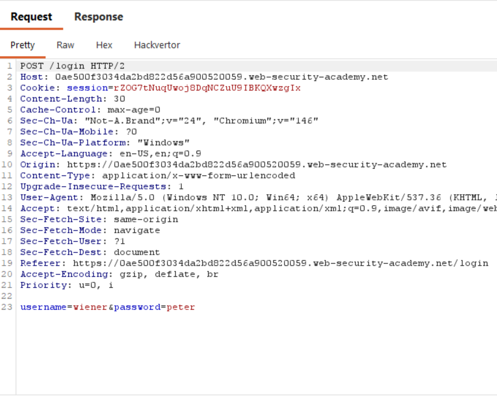
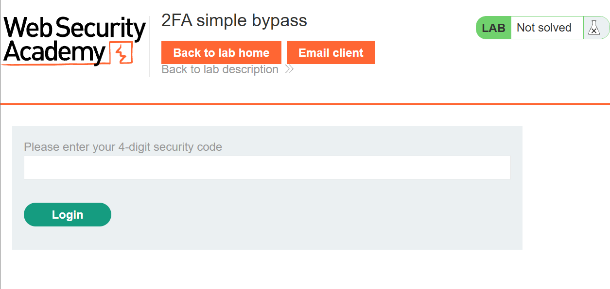
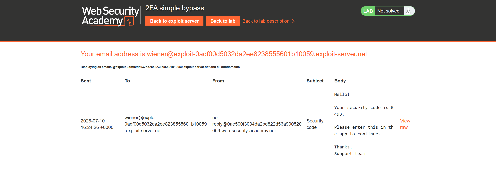
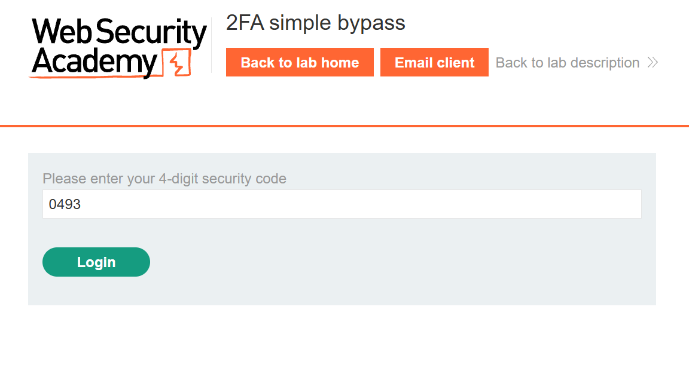
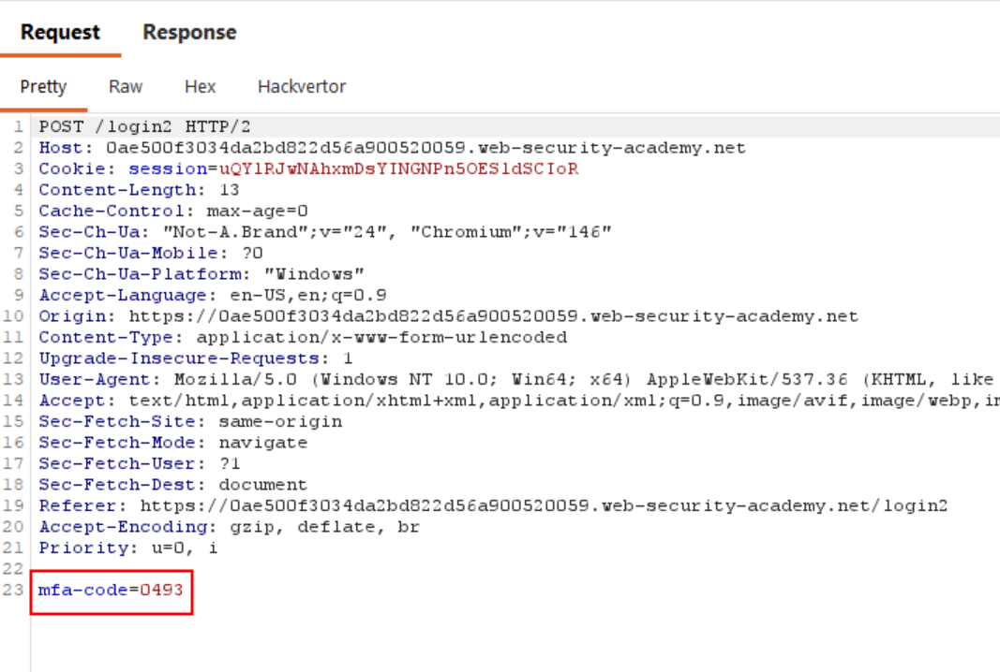
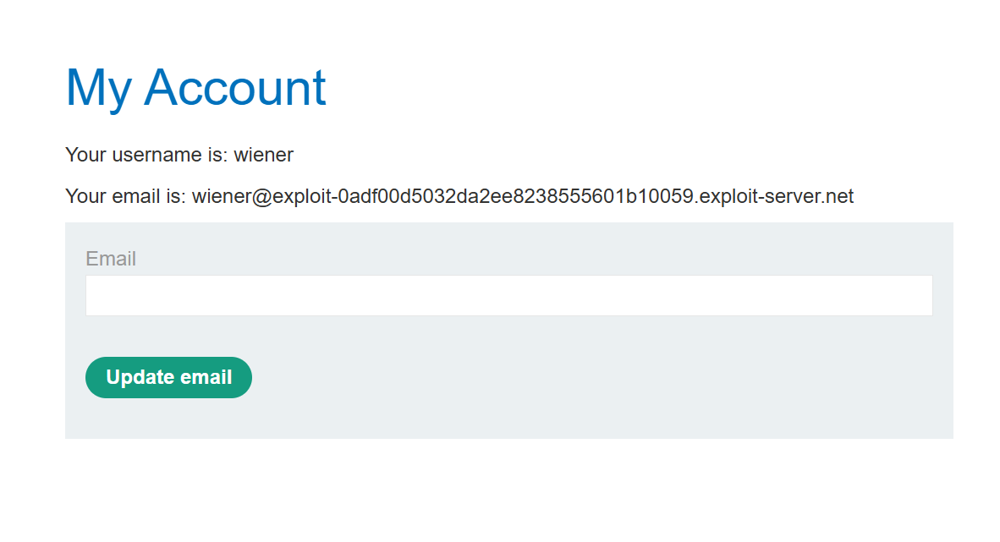
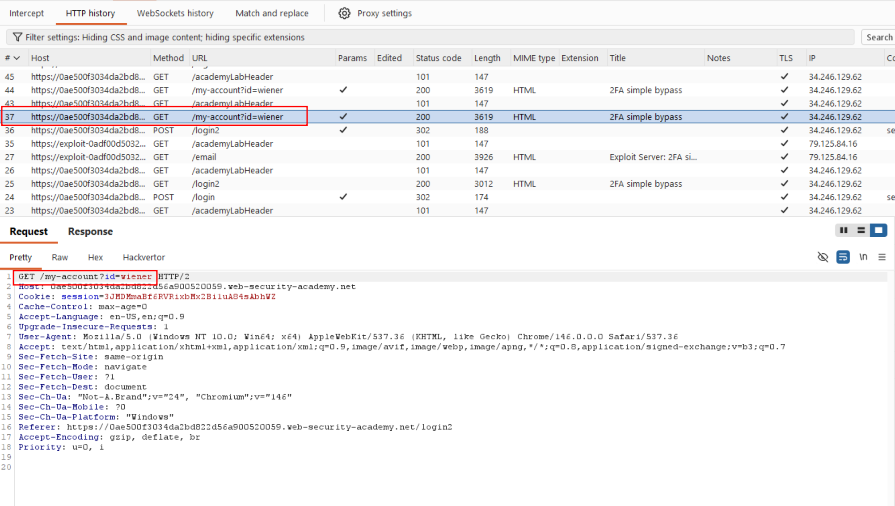
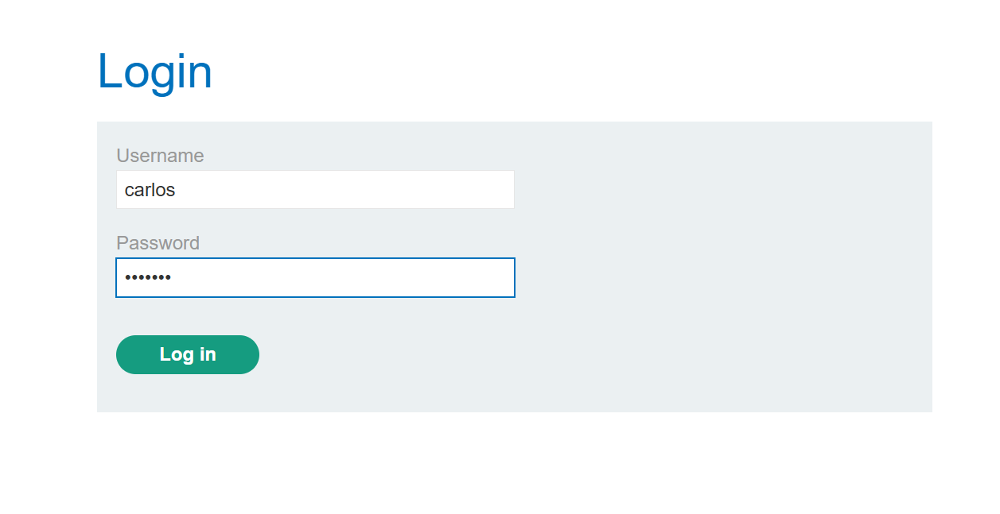
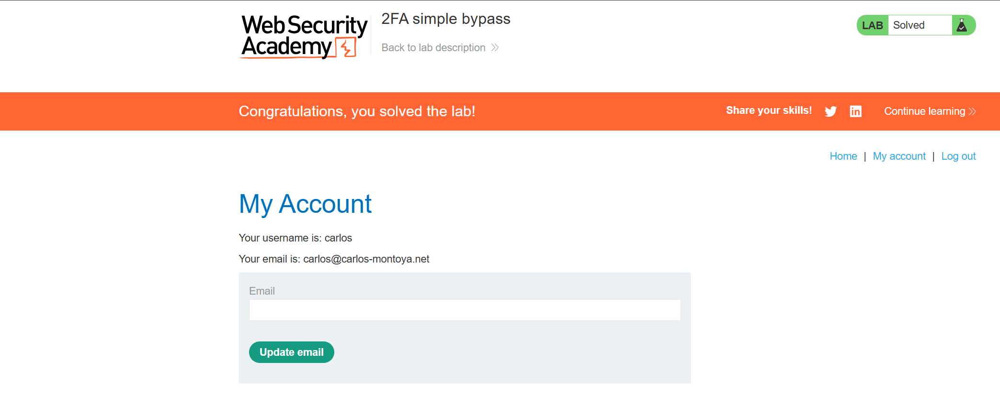

This lab's two-factor authentication can be bypassed. You have already obtained a valid username and password, but do not have access to the user's 2FA verification code. To solve the lab, access Carlo's account page.
wiener:petercarlos:montoyaI opened up the lab and instantly noticed something different from the previous labs: there's a button at the top called Email client.
I clicked My account and attempted to log in using the provided credentials wiener:peter. This sends a POST request to the /login endpoint.

After logging in with the credentials, I was prompted to enter a 4-digit security code.

I clicked Email client button at the top. Inside the client, I saw an email sent to me containing a 4-digit security code.

I entered the code and clicked Log in, which sends a POST request to the /login2 endpoint with the mfa-code in the body.


I was then finally logged in as wiener.

In Burp, you can see that after logging in, a request was made to the /my-account page.
To summarize the authentication flow: submitting credentials via POST to /login triggers a 4-digit code sent to the user's email; submitting that code via POST to /login2 completes login and redirects to /my-account.
However, for the carlos user, even though we know his password, we can't obtain his 4-digit security code since we don't have access to his inbox. What if we try authenticating with just the username and password, and skip entering the security code step entirely?

I first tried authenticating with the username and password.

As expected, I was prompted to enter the 4-digit security code. This suggested the second factor might only be enforced at the point of navigation rather than validated server-side, so instead of entering the code, I manually navigated to /my-account by editing the URL directly and the application let me through without ever validating the 2FA step.
